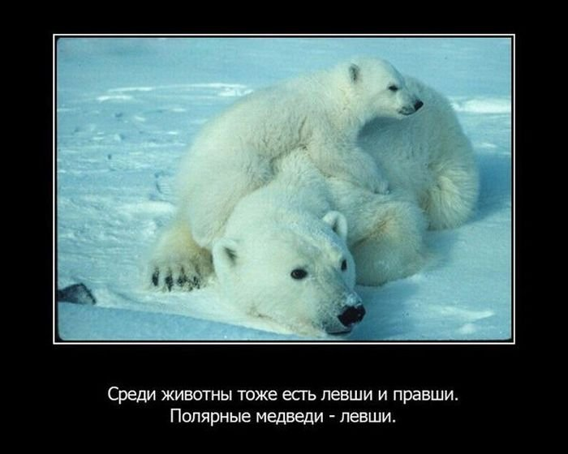

50 интересных фактов о животных
Отвечая на бесконечные «Почему?» во время прогулки с ребёнком, можно рассказать ему много полезного (и не очень). Матильда Мастерс, путешественница и исследователь, составила книгу «Может ли жираф облизать свои уши?». В ней она простым языком отвечает на 320 вопросов о животных, нашем теле и науке. Мы выбрали самые любопытные факты, которые могут удивить даже взрослого.
{kind=link}
Факты.
1. Когда обезьяны-пауки встречаются, то они обнимают друг друга.
2. Кошки имеют 32 мышцы в каждом из своем ухе.
3. Летучие мыши являются единственными млекопитающими которые могут летать
4. Белые медведи-левши.
5. У золотой рыбки память 3 секунды
6. Даже после того, как медуза умерла, она все еще может ужалить.
7. Навозные жуки могут переносить на себе грузы в 50 раз превышающие его массу тела.
8. Сердце креветки находится в голове.
9. Улитка может спать три года подряд.
10. Щеки бурундука могут растягиваться от орешек и еды в три раза больше чем его голова.
11. У тигра не только полосатая шкура, но и тело тоже.
12. Морские коньки плавают “держась за руки”, это они связывают вместе свои хвосты.
13. Глаз у страуса больше, чем размер его мозга.
14. Волки могут съесть 20 кг мяса за один прием пищи.
15. Бабочки пробуют пищу ногами.
16. Беркут может летать со скоростью свыше 250 км/час.
17. Яд лягушки – стрелка может убить 2200 человек.
18. Львы не могут рычать, пока им не исполнится 2 года.
19. Скунсы может распылить защитную вонь в радиусе 10 метров.
20. Акулы жили раньше чем динозавры! Окаменелости акул датируются 450 миллионов лет.
21. В отличие от большинства видов кошек, оцелоты отлично плавают.
22. Луговые собаки живут в норах, которые имеют отдельную ванную комнату, детскую зону и зону для отдыха.
23. Рыба-парусник является самой быстрой рыбой и достигает скорости 115 км/час.
24. Самец – пингвин “предлагает” руку и сердце самке, даря ей камень. Если она принимает его, то кладет этот подарок в свое гнездо.
25. Павлин считается самой красивой птицей среди курообразных. Павлин — очень близкий родственник петуха.
26. Новорождённый слонёнок весит около 100 килограммов.
27. Сурки свистят , когда им угрожает опасность.
28. Императорские пингвины могут нырять на глубину до 500 метров и способны задерживать дыхание на 18 минут.
29. В Индии 50 миллионов обезьян.
30. Мухи жужжат нотой ФА.
31. Синий Кит весит как три слона.
32. Гиббоны имеют самые длинные руки среди всех приматов.
33. У коз частая отрыжка.
34. У зубатки вкусовые рецепторы по всему телу.
35. Брызгун может поражать добычу плевком с расстояния 1,5 метров.
36. У вомбат какашки квадратной формы.
37. Ламы не имеют копыт.
38. Детеныши - дикобразы когда рождаются имеют мягкие иголки , которые затвердевают через несколько дней.
39. Верблюд может обходиться без воды две недели.
40. Лось имеет очень чувствительные рога.
41. Гекконы иногда едят свои хвосты, после потери.
42. В течение жизни хлопотливая пчёлка производит одну двенадцатую чайной ложечки мёда.
43. Скорость размножения крыс так велика, что при благоприятных обстоятельствах 2 крысы могли бы дать потомство в 1 миллион крыс в течение полутора лет.
44. Некоторые мотыльки могут вырастать размером с ладонь взрослого человека.
45. Детеныши шакала рождаются под землей.
46. Кузнечик может прыгать на расстояние в 20 раз превышающее длину его тела.
47. У фламинго , их красивый цвет получается от водорослей, диатомеи и мелких ракообразных, которых они едят, и которые богаты каротином.
48. По черепахи можно распознать по звуку: самцы ворчат, самки шипят.
49. Бойцовая рыбка может выжить без воды в течение нескольких часов.
50. Стрекозы могут летать в любом направлении – вперёд, назад и в стороны. Это самые быстрые летающие насекомые, их скорость достигает почти 100 километров в час.